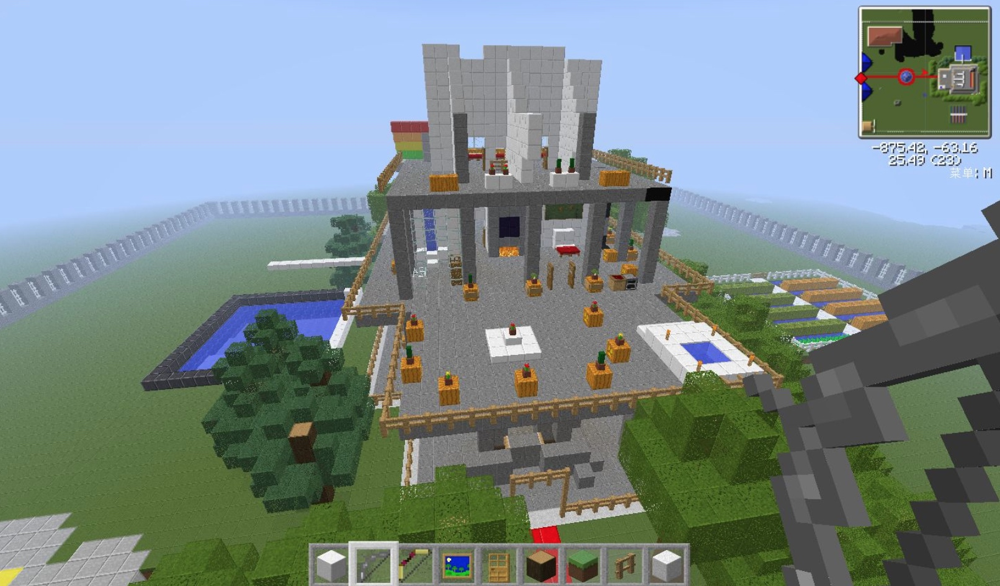
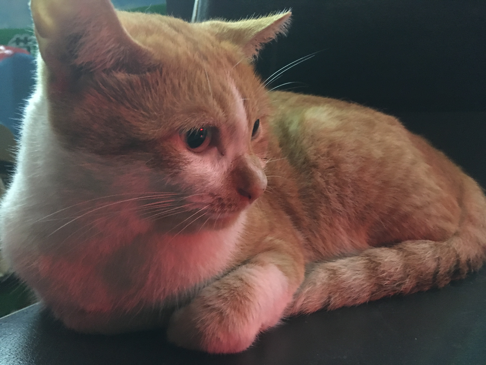

昨晚开始降温，快下班的时候开始下雨了，骑着电动车匆忙回到家，还好有雨衣，只是湿透了鞋子。
雨天适合写代码，帮 Richard 调了几个电商平台的 bug，没有明确目标的项目着实不爽，代码量少而且很累，大概是思维的切换比较耗费心神。
看了一会儿别人直播我的世界，索然无味。玩 MC 算是一种寄托吧，睡前幻想着、计划着MC的世界很容易睡去，然而网易还没有出 Mac 版。

晚上陪姑奶奶去吃牛肉粉，要了半颗大蒜，吃了两瓣。回家的路上偷拍了一只忧郁的喵星人。

以后有条件了，我想养一只喵养一只汪。